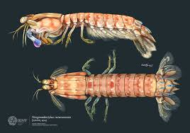
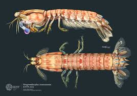

Fatos sobre o Stomatopoda
Informações Gerais

Nome científico: Odontodactylus scyllarus,.
Olhos são testemunhos da criatividade da evolução. Todos eles fazem as mesmas coisas básicas - detectam luz e a convertem em sinais elétricos - mas de uma variedade tão maravilhosa de maneiras. Existem olhos únicos e compostos, lentes bifocais e rochosas, espelhos e fibras ópticas. E há olhos tão estranhos, tão constantemente surpreendentes, que, após décadas de pesquisa, os cientistas descobriram apenas como eles funcionam, muito menos por que eles evoluíram dessa maneira. Para encontrá-los, você precisa nadar.
Classificação científica
Reino
Animalia
Filo
Arthropoda
Subfilo
Crustacea
Classe
Malacostraca
Subclasse
Hoplocarida
Ordem
Stomatopoda
Curiosidades

São capazes de desferir um dos mais rápidos e violentos golpes do reino animal, seu soco fora registrado com uma velocidade de 80 km/h e aceleração similar a uma arma calibre .22. A pressão exercida pelo soco é de 60 kg/cm². Essa força esmagadora é a responsável pelo seu título de "lagosta-boxeadora" e é capaz de facilmente quebrar a carapaça de um caranguejo, as conchas duras e calcificadas de gastrópodes ou até mesmo quebrar o vidro reforçado de um aquário.
Referências biográficas
Informações Gerais 
Nome científico: Odontodactylus scyllarus,.
Olhos são testemunhos da criatividade da evolução. Todos eles fazem as mesmas coisas básicas - detectam luz e a convertem em sinais elétricos - mas de uma variedade tão maravilhosa de maneiras. Existem olhos únicos e compostos, lentes bifocais e rochosas, espelhos e fibras ópticas. E há olhos tão estranhos, tão constantemente surpreendentes, que, após décadas de pesquisa, os cientistas descobriram apenas como eles funcionam, muito menos por que eles evoluíram dessa maneira. Para encontrá-los, você precisa nadar.
Classificação científica
| Reino | Animalia |
| Filo | Arthropoda |
| Subfilo | Crustacea |
| Classe | Malacostraca |
| Subclasse | Hoplocarida |
| Ordem | Stomatopoda |
Curiosidades
São capazes de desferir um dos mais rápidos e violentos golpes do reino animal, seu soco fora registrado com uma velocidade de 80 km/h e aceleração similar a uma arma calibre .22. A pressão exercida pelo soco é de 60 kg/cm². Essa força esmagadora é a responsável pelo seu título de "lagosta-boxeadora" e é capaz de facilmente quebrar a carapaça de um caranguejo, as conchas duras e calcificadas de gastrópodes ou até mesmo quebrar o vidro reforçado de um aquário.